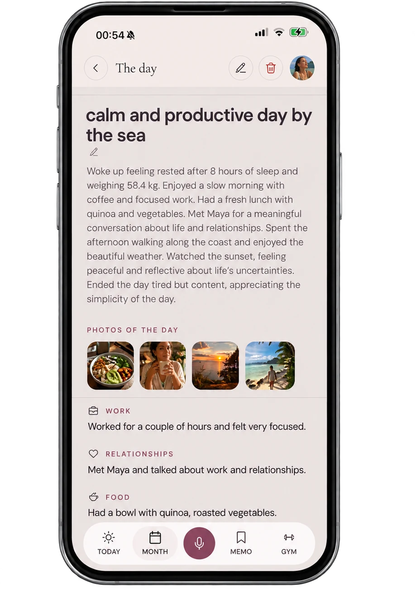

dayalogue · mockup · 13 settembre
Questo e il pezzo che viene DOPO la scena "Come funziona" che hai gia' online: la frase di chiusura resta, continui a scorrere, e il telefono ruota. Sul retro non c'e nessun marchio di altri — c'e il tuo: i tre punti salgono, diventano l'arco di un lucchetto e scattano chiusi.
Niente mela e niente variazioni della mela: Apple lo vieta per iscritto ("You may not use an image of a real apple or other variation of the Apple logo for any purpose"). Il lucchetto qui e fatto con il tuo segno, quindi e tuo e non si discute.

Solo tu hai la chiave.
La giornata si chiude sul tuo telefono, prima di partire.Subito dopo
… e si entra nella cassaforte, che sul sito c'e gia': la stessa promessa, detta due volte con lo stesso segno.
La scena qui sopra e girata sui colori veri del sito e sulla fotografia vera dell'app. Manca solo la tua scelta su come deve chiudersi.
Come preferisci il momento della chiusura?